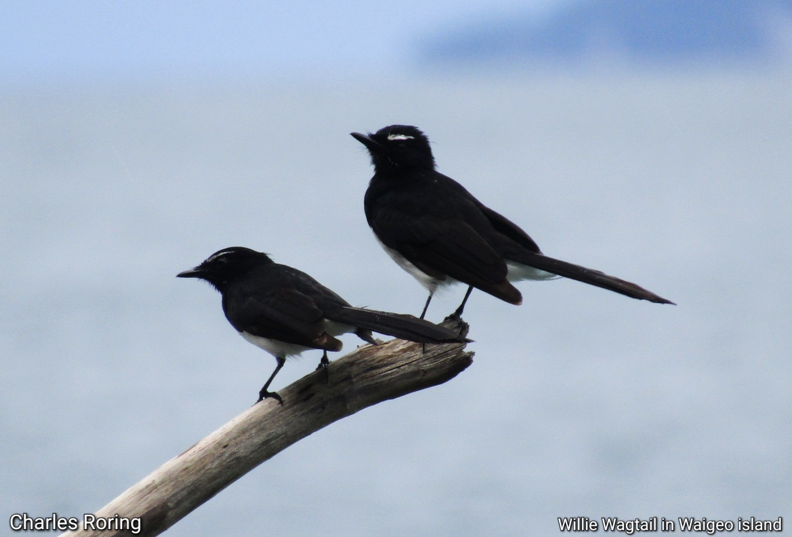

Jagal Papua (Cracticus cassicus) adalah burung berkicau yang hidup di hutan hujan tropis Papua dan pulau-pulau di sekitarnya. Burung ini makanannya adalah buah-buahan hutan. Ia suka bertengger di cabang atau ranting pohon yang tinggi dan berkicau untuk memikat pasangan betinanya.
Kakaktua Raja (Probosciger aterrimus) hidup di hutan hujan tropis Tanah Papua dan pulau-pulau di sekitarnya hingga ke Kepulauan Aru dan bagian utara dari benua Australia.
Murai Batu (Copsychus malabaricus) adalah burung berkicau yang suaranya merdu sekali. Banyak orang di Jawa, Sumatra, Sulawesi memelihara burung ini. Harganya sangat bervariasi. Untuk burung Murai Batu yang masih muda dan suaranya belum terlalu merdu, harganya masih beberapa ratus ribu atau di bawah 1 juta rupiah. Murai Batu jantan yang dewasa dan memiliki suara merdu kadang bisa dijual hingga harganya mencapai sekitar 2 sampai 3 juta rupiah. Bila burung ini memenangkan kontes berkicau, harganya naik drastis sampai puluhan juta rupiah.
Pitohui Kepala Hitam adalah burung endemik di hutan hujan tropis di Tanah Papua yang unik sekali karena burung ini dianggap beracun. Oleh karena itu, meskipun kicauannya merdu dan menarik, orang cenderung tidak memelihara burung ini karena takut akan kena racun.
Burung Munia Muka Hitam
Munia Muka Hitam atau Bondol Taruk (Black-faced Munia) hidup di Sulawesi, Kepulauan Maluku, Nusa Tenggara Barat, Nusa Tenggara Timur hingga Timor Leste. Dalam bahasa Latin namanya adalah Lonchura molucca. Burung ini cukup umum ditemukan di kawasan pertanian, daerah pesisir pantai, pinggiran kampung, dan wilayah hutan yang sudah diolah warga atau bekas kebun. Wajahnya hitam, paruhnya tebal dan tajam Bagian bawahnya dari dada, perut hingga buntutnya putih bergaris-garis hitam. Punggung atas berwarna coklat cerah dengan sayap agak gelap.

Willie Wagtail (Burung Baikole) adalah burung yang umum kita jumpai di kawasan pesisir pantai Kepulauan Maluku, dan Papua. Burung ini suka bertengger di cabang pohon yang berada di tepi pantai atau pinggiran sungai. Kicauannya terdengar merdu sekali terutama di pagi dan di sore hari ketika matahari bersinar cerah. Ketika sedang berkicau memanggil pasangannya, pantat dan ekornya digoyang-goyangkannya ke kanan dan ke kiri. Perilakunya inilah yang menyebabkan masyarakat lokal di Maluku menamainya Burung Baikole (artinya: pantat goyang).
Setiap spesies burung memiliki peran yang unik dalam menjaga keseimbangan ekosistem di tempat dia tinggal. Oleh karena itu, perburuan liar dan pemusnahan habitat asli dari burung harus dicegah. Hal ini penting agar alam kita tetap lestari dan manusia bisa terus menikmati manfaatnya.